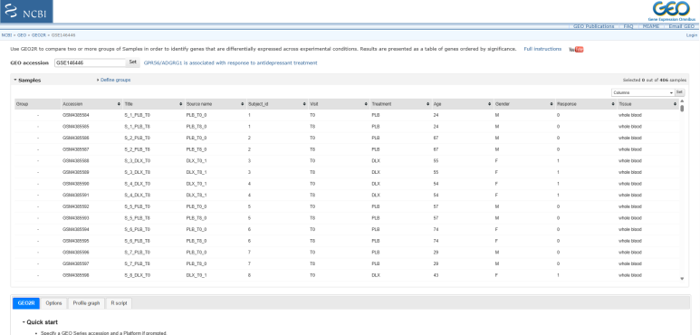
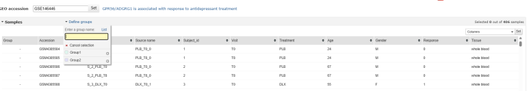
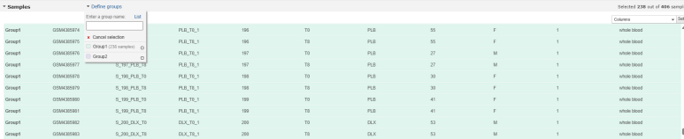
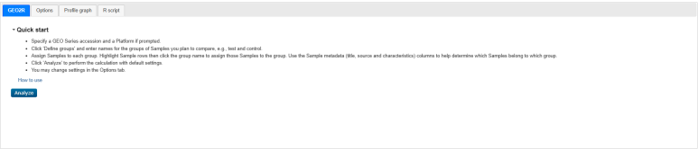
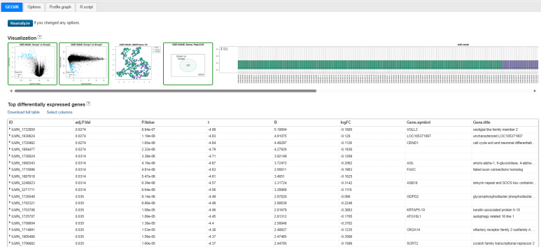

GEO2R란?
GEO2R는 GEO Series의 두 개 이상 샘플 그룹을 비교하는 NCBI 웹 도구입니다. Microarray에서는 submitter가 제공한 processed Series Matrix에 GEOquery와 limma를 적용합니다.
GEO2R가 분석 가능하다는 사실이 데이터 품질과 연구 설계의 적절성을 보장하지는 않습니다. metadata와 normalization을 사용자가 확인해야 합니다.
GEO2R 열기1. GEO2R 화면 열기

GSE accession을 입력하고 metadata 열에서 그룹 기준을 찾습니다.
2. 그룹 정의

일반적인 2그룹 비교는 Test/Case를 먼저, Control을 두 번째로 정의합니다.
logFC = Test - Control
logFC > 0 : Test에서 증가
logFC < 0 : Test에서 감소Group1보다 Disease, Control 또는 Responder, Non_responder처럼 의미가 분명한 이름을 사용합니다.
3. 샘플 배정

- metadata 열을 정렬합니다.
- Ctrl 또는 Shift로 샘플을 선택합니다.
- 정의한 그룹 이름을 클릭합니다.
- 시점·조직·치료가 의도한 비교와 맞는지 재확인합니다.
4. 분석 실행

먼저 기본 설정으로 Analyze를 실행하고, Options에서 log transformation, normalization, adjusted P-value와 contrast를 확인합니다.
5. 결과 해석

| 열 | 의미 |
|---|---|
| logFC | 그룹 간 log2 발현차이 |
| P.Value | 보정 전 P-value |
| adj.P.Val | 다중검정 보정 P-value |
| t | moderated t-statistic |
| B | 차등발현일 log-odds |
전체 표를 내려받고 volcano, UMAP, distribution과 sample clustering을 함께 확인합니다.